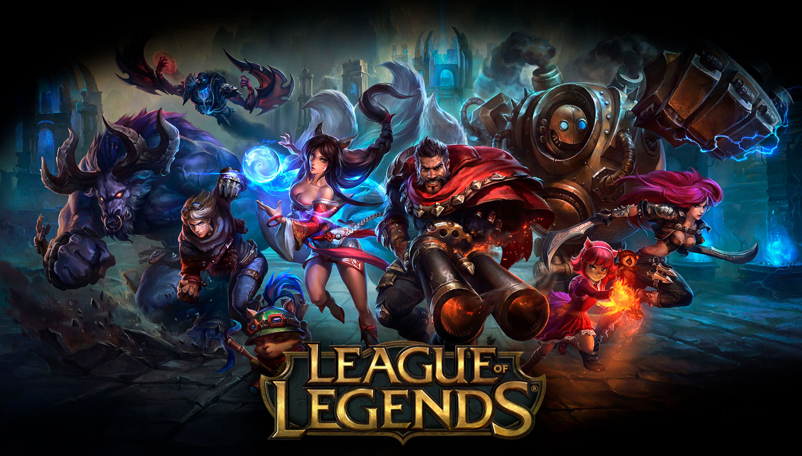
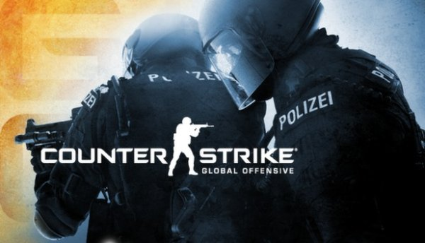

Não tem jeito. Gostando ou não gostando, Fortnite é o maior fenômeno dos últimos tempos no mundo dos games. O jogo elevou o conceito de battle royale a novos patamares de sucesso e atingiu um público nunca antes imaginado para um jogo. Com diversas atualizações e constantes parceiras com outros mercados, o jogo se mantém sempre em alta e pronto para inovar.
2. World of Warcraft
World of Warcraft é um dos maiores clássicos dos jogos para PC. O jogo foi um sucesso imbatível no mundo dos MMORPG que, até hoje, não conseguiu ser replicado. Mesmo tendo caído bastante em popularidade, WoW ainda oferece absolutamente tudo o que um fã do gênero pode querer: inúmeras opções de PVP e PVE, incontáveis conquistas a se obter, milhares de quests a se completar e um mundo aberto extremamente original e cativante para se explorar.
3. League of Legends

O MOBA mais famoso do mundo, sem dúvidas. League of Legends assumiu os moldes de Dota 2 e fez as mudanças necessárias para se tornar o jogo mais acessível a um número bem maior de jogadores. A fórmula foi tão bem-sucedida que hoje em dia é difícil encontrar um gamer que nunca tenha ouvido falar de LoL.
4. Counter-Strike: Global Offensive

Com quase uma década desde o seu lançamento, CS:GO segue mais forte do que nunca. O jogo recebeu pouquíssimas atualizações desde o início, permanecendo fiel à sua proposta inicial e aos fãs de longa duração. Hoje em dia, o jogo vem batendo repetidamente o seu próprio recorde de jogadores e o seu cenário competitivo mundial só cresce na mesma medida.
5. Minecraft
O maior jogo do gênero sanbox do mundo, Minecraft é um dos jogos mais jogados de hoje em dia. Tem uma interação com o ambiente bem interessante, o jogo permite que os jogadores construam e modifiquem o mundo da forma que imaginarem. Além de ser muito procurado pelo público mais jovem, o jogo também é voltado para aqueles que passam horas construindo e editando verdadeiras obras de arte dentro do jogo.
6. The Witcher 3
The Witcher 3 é um RPG tão denso e profundo quanto os dois primeiros games da série, mas conta com um mundo aberto tão grande que chega a intimidar. Os inúmeros detalhes da história, o ciclo dia/noite e o clima dinâmico do cenário proporcionam uma experiência extremamente imersiva e autêntica ao jogo. Definitivamente merecedor dos 251 prêmios que recebeu.
7. Call of Duty: Warzone
Call of Duty: Warzone tem sido um enorme sucesso desde o seu lançamento. Mesmo em um gênero lotado de grandes nomes, Warzone consegue se destacar entre os battle royales por oferecer o nível de diversão e qualidade dignos da franquia Call of Duty. Com gráficos inéditos no gênero, um arsenal gigantesco e diversos veículos diferentes, Warzone é o jogo perfeito para quem gosta de ação frenética.
8. Grand Theft Auto V
GTA V consegue se destacar no meio de uma franquia repleta de pérolas. O jogo oferece todos os elementos que fizeram da série um sucesso e em um nível inédito, com um mundo aberto maior do que nunca, três personagens jogáveis durante a campanha, gráficos impecáveis e inúmeras missões extremamente originais.
9. Dark Souls III
Dark Souls III está entre os principais RPGs de ação de todos os tempos. O jogo possui gráficos de encher os olhos e combates eletrizantes marcados pelo alto nível de dificuldade, especialmente com relação aos chefões, que são verdadeiros desafios que tomam o tempo até mesmo de jogadores experientes.
10. Valorant
Valorant é um FPS da Riot, mesma desenvolvedora de League of Legends. O jogo foi desenvolvido para ser um concorrente direto de CS:GO, com mecânicas muito parecidas. Aqui, as partidas acontecem entre dois times de 5 jogadores e o objetivo do atacantes é eliminar toda a defesa ou plantar uma bomba (Spike) e protegê-la até que ela exploda. A defesa, é claro, precisa eliminar o ataque antes que plantem a bomba, ou desarmem ela a tempo, ou seja, idêntico a CS:GO. A diferença deles é que o valorant existe personagens com habilidades únicas.
Essa area é para ver onde adquirir e como são os jogos

.png)